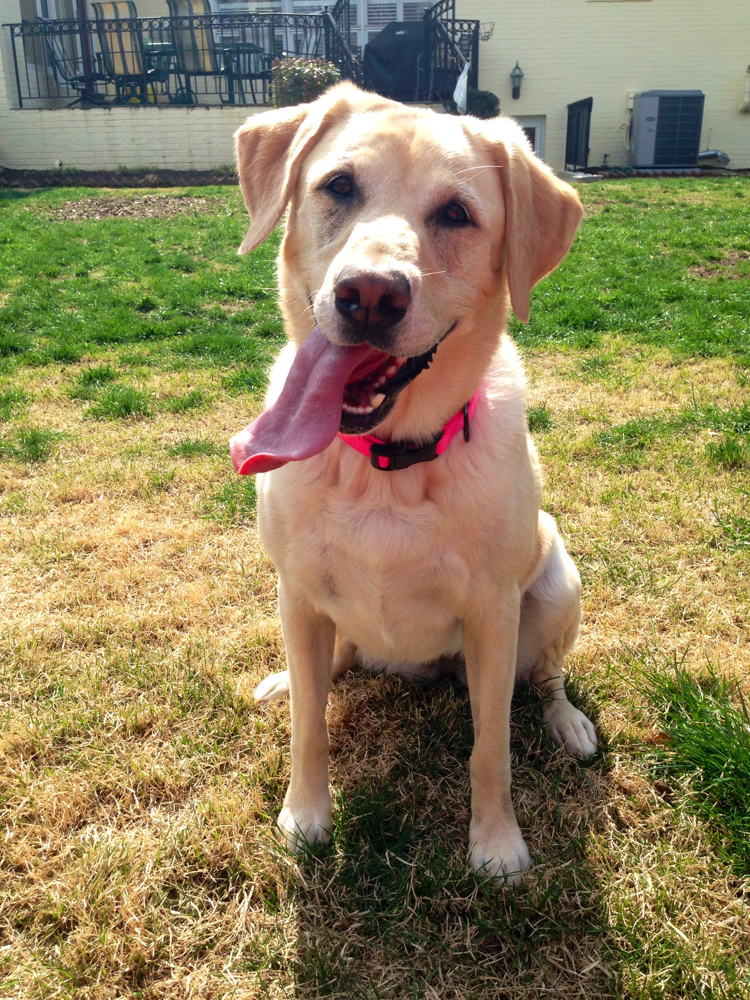
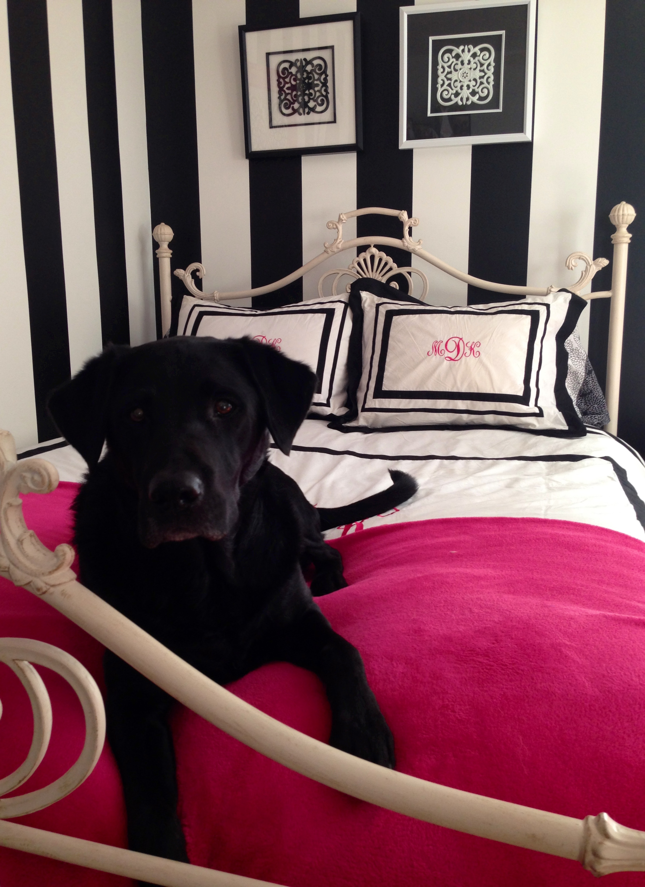
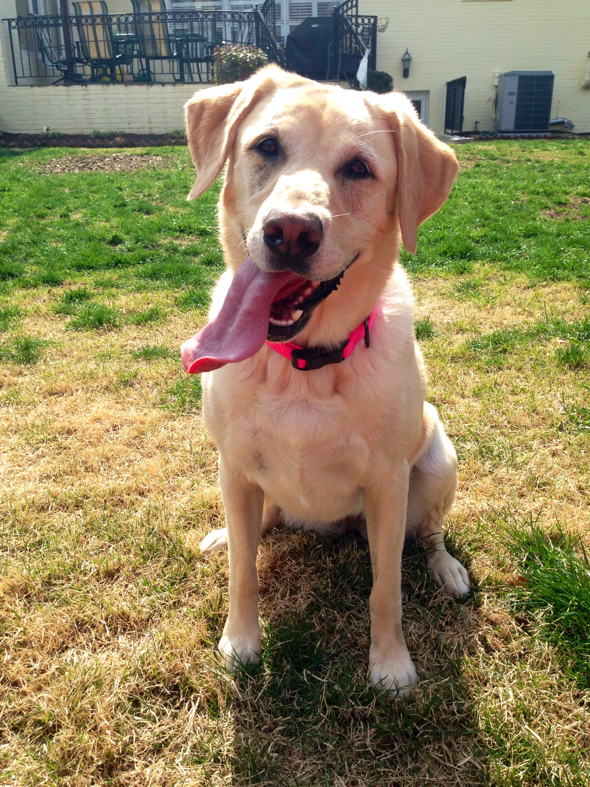
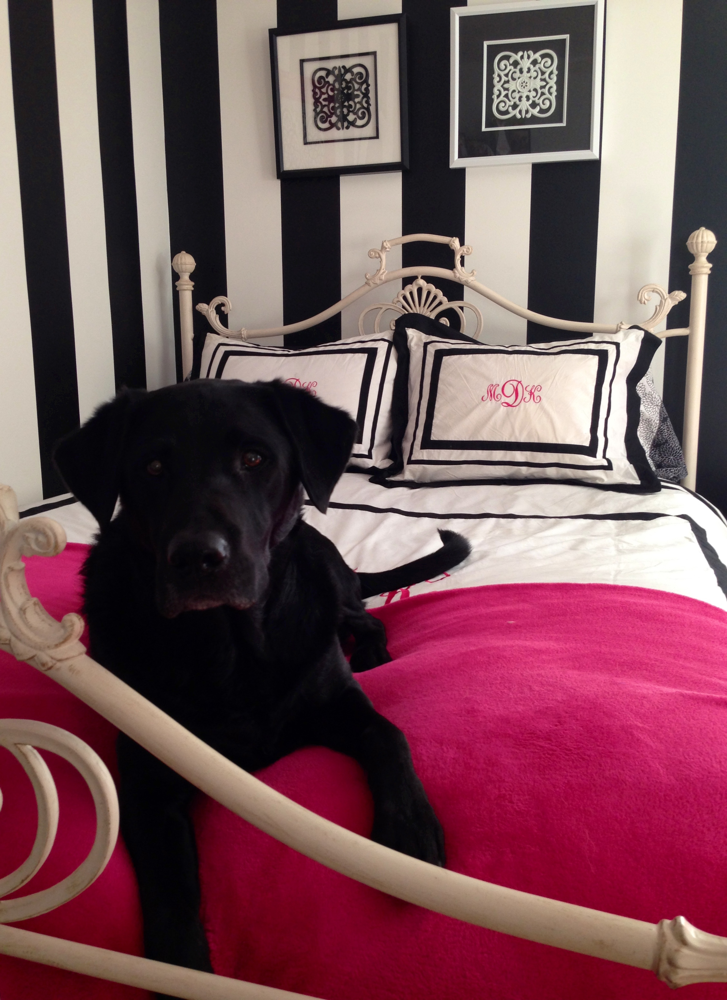

My parents, Bob and Kathy.

My four sisters, Bridget, Colleen, myself and Molly.
My yellow labrador retriever, Wrigley.
My black labrador retriever, Bogey.
I was born and raised in Bethesda, MD and attended high school at Georgetown Visitation in Washington, DC. Growing up, my household consisted of my father, my mother, my three older sisters and our two dogs. My father works as a dentist and my mother is a trained nurse, who is now a stay-at-home mother. My older sisters have all have graduated college; therefore, they work as well. My eldest sister is a nurse practioner, my second eldest sister handles public relations for a firm and my third eldest sister works for a start-up company. The names of my family members family can be seen in a list below.
My parents, Bob and Kathy.
My four sisters, Bridget, Colleen, myself and Molly.
My yellow labrador retriever, Wrigley.
My black labrador retriever, Bogey.
As a sophomore at the University of Georgia, I am currently pursuing my Bachelor's Degree in Fashion Merchandising within the College of Family and Consumer Sciences. My area of study was one of the main reasons I decided to travel ten hours from home to attend college. Aside from academics, I am involved in several organizations and programs on UGA's campus. My various involvements can be seen in the table below.
| Alpha Gamma Delta | The Panhellenic Council | Student Merchandising Association | The Society of Entreprenuers |
|---|---|---|---|
| A sorority that aims to cultivate women academically and socially, promote sisterhood and teach women how to head a life full of purpose. | The Council governs over all 18 sororities on UGA's campus and promotes Panhellenic life, as a whole. | Aims to asses personal style and trends on UGA's campus and organizes a fashion show each February. | Helps students with an entreprenurial mindset cultivate the skills to open their own business. |
| Chapter Meetings on Every Monday, 6pm | Meetings on Every Tuesday, 6:30pm | Meetings Every Other Wednesday, 6:30pm | Meetings Every Other Thursday, 5pm |
| UGA Alpha Gam | UGA Panhellenic | UGA SMA | UGA SoE |
My family is very proud of all my accomplishments thus far at the University of Georgia. In fact, here is a quote from my mother, Kathy:
"Even though Mary Kate is ten hours away from home, I am so proud of what she is doing to be an involved member in the UGA community. She is active in her sorority, and participates in both the social and philanthropic aspects of Alpha Gam. She is also involved in a few other organizations and clubs, as she is always on-the-go with a busy schedule. I am very proud of her!"
Although I have more than two years until graduation, I have already begun to ponder where my life will take me in the future. Most likely, I will return to Washington, DC to pursue my first job and live at home while working. After a few years at home, I hope to move to New York City and further pursue my fashion career in one of the world's major fashion cities. Wherever my future takes me I will always be proud to be a Georgia Bulldog!